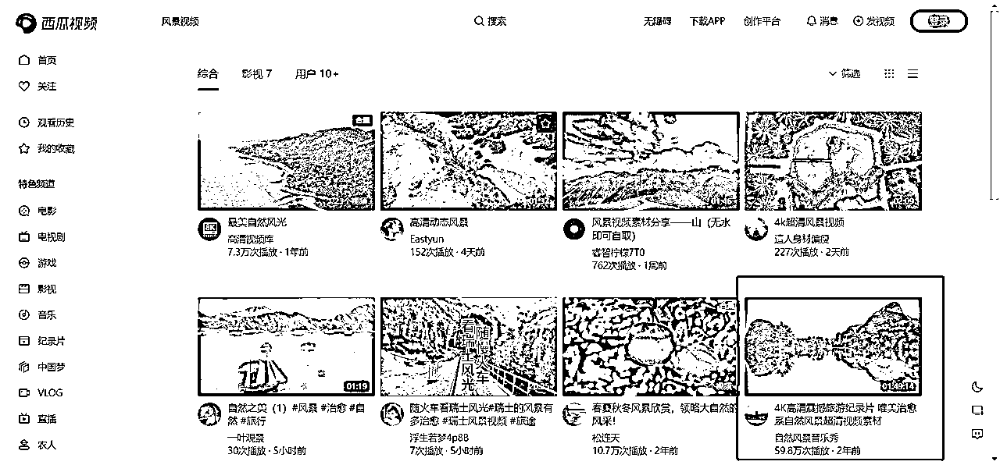

来源：https://bwvzbvg3i3.feishu.cn/docx/Hojvd0I9YosEpuxcuqNcadBwnyf
各位圈友好，我是书虫，一个刚毕业的00后，大学期间通过自己的努力做各种项目已经挣到了自己的第一个100万。2023年通过AI风口契机，加入知识星球的各种社群会员，后面生财经常刷贴提升认知寻找项目，一直处于潜水的状态，感觉自己没有啥能够写的，但是最近在自己个人公众号随笔写了一篇文章关于大学毕业百万存款的，蛮多朋友留言说想要看看。你是如何一步一步做成这样的，萌生这个想法去分享我个人是如何从一个普普通通的大学生一步一步走到至今，现在有赚钱想法的00后也越来越多，希望我的经历可以给你们带来一些灵感
币A账户的是u，和美元挂钩的，感兴趣的看看实时汇率然后计算就行。上面三个账户存款就已经过百万啦，不是标题党
做这个的缘由是我高中的时候就发现有人在做，我还从他的公众号拿课程，然后在我高考完的时候，放假期间，就立马自己也做了一个这类型的公众号。做这个的原因是因为我感觉我也能做，并且有很多人需要，还能够赚取金钱，就萌生了这个想法
微信公众号的内容是关于盗B网课的，一些高中名师盗B网课，基本都是作Y帮、猿F导、高T课堂、腾T课堂。最开始由于我没有课程，课程也是直接搬运别人的，别人更新自己也立马跟上更新。读者们这一块不要有过重的心理负担，现在24年了，做虚拟资料的还是同样道理的，同行里面拿到一份以后自己也就可以开始卖了，只要你有精准客户需要，你有引流能力就能变现
我当时什么都没有引流方式是如何做的？
一共有三个平台，哔哩哔哩、高考倒计时、Timing
哔哩哔哩当时引流风控不严，直接上传视频，不需要去重，不需要剪辑，上传的时候不标原创就可以了，因为核心玩法在于让作品得到曝光，免费钩子在评论区或者个性签名放自己的，他们就能照着钩子找过来了，引流到公众号里面是能够获取全部课程，过程中避免不了各种封号，封号问题的话就是找到接M平台，那时候一个账号成本就一毛钱，封号了就换号
简单的SOP流程：
①百度网盘把视频下载到桌面
②视频直接上传到B站，核心在于不标原创
③发完作品以后一定要在评论区或个人签名留钩子
④封号了，找接M平台获取新的账号下一个
也是在那时自己也获得了矩阵思维的能力，因为通过搜索关键词能搜出来自己的视频，就产生了一些想法；假如自己弄很多的账号，会不会搜索关键词出来的所有视频都是我上传的，无论他点击哪一个进去，他都会是我能引流到私域的流量
刚才好奇的去搜索了一下，居然还能搜索的到，之前一共弄过40多个号，也算封号斗罗了。当然被封号的过程心态肯定是有过崩溃的，刚搞起来又被封号了，但是你想做起来这个是不可避免的。就像现在很多人都说，你没有封够100个号说明你都还没入行
Timing是几年前的平台了，属于高中生的app，并且这些群聊基本能够直接进入，与B站同理获取账号每天晚上我都会把所有的群聊都发一遍广告，早上起来以后基本就有几十上百的关注量增加。这个平台改版的乱七八糟的和之前不一样了，没办法给大家图片或者视频展示。
简单的SOP流程：
①利用接码平台获取新的账号
②直接简单粗暴的进群后发广告(注:那时候群里也没有群撤回消息功能)
这个大概方式玩法维持了两个月，那会运气还比较好，平台也没有过多的限制，我也日复一日的坚持着。后来我就上大一了，刚入大一的时候我没有办理校园网，因为我通过当时自媒体得知说很多坑，自己就没有去办理，为了省49元一个月，现在想起来，真是觉得那会自己有一点清澈的愚蠢，捡了芝麻丢了西瓜。那会也不懂流量的重要性，就搁置了一段时间
手机流量也没那么多，那没办法每天都像家里那样操作，因为挺费流量的，发一轮广告大概差不多2G手机流量，也没有那么多的电话卡，短时间也看不见收入。但是不久以后他们平台也改规则了，直接把这个群聊功能给砍掉了，没有了加入群聊入口，我想引流的这种方式就没办法继续了
高考倒计时这个App就有趣多了，类似视频如下
这个App一样有广场功能的，发出去这个平台全用户都能够看得见，我当时是自己写了个很简单的脚本。写脚本的能力也是那会在B站上找一些基础的课程快速学会的，当然功能比较简单，所以需要学习点击事件、输入事件、循环事件，这三个功能就足够了
类似于现在的影刀RPA，2020年那会影刀RPA刚出来，那时候影刀也还没那么火，也还没渠道去了解这款工具，通过自己写的脚本然后24小时一直在广场发广告，大概只维持了两天，他们平台规则就把新用户只能发送8条，再后来就变成6条，再后来变成4条，再后面新用户一星期内不能发，多次改变了他们平台的规则，对抗的过程真的是即不爽但是又好玩
这个故事也告诉我们，跟平台对着干是没有好下场的，因为规则别人说了算。但话又说回来，也得看平台的风控严不严，如果不严的情况下，薅一波流量也挺好的，循环发了两天，也进了100多个流量。因为那会的我，真的基本啥也没有，只能不断的去试错，遇到高考倒计时这种比较严格的平台就没办法了，遇到Timing这种的平台就可能有那么个契机我们能够做起来
因为这个时候是疫Q时期了，那时候也基本在家，确确实实很多人被这个坑的很惨，但是我是吃了芝麻大的红利，拥有这样一个机会去做起来，做起来以后，也有几个类似于我这样的同行，我们基本都是一万多关注量这样，几个公众号互推下来，我的公众号直接达到了2.6w左右的关注量，也算是这一块做到这类型比较头部的一个公众号了，这个互推也是别人先找到我的，那时候还不懂这个互推的含金量，粉丝量居然能够增长那么快。互推就是各自写一篇软文，然后双方发对方的文章引流到自己公众号。几轮下来就涨了很多粉，因为基本都是这类型的粉丝，其他博主也都是接广告变现的，几个人就这样互帮互助都起来了
其实在开始做的时候我就已经知道在做起来以后该如何变现；因为最开始说的对标，别人是怎么做的？而我也这么做了
直接在微信公众号的栏里面留下商务合作的微信，有广告商看见了以后有需要我发广告，也就联系到我了
最最离谱的地方出现了而这些广告商其实也挺让我震惊的，因为我分享的就是他们的课程，他们平台还能找到我，并且是付费给我让我给他们打广告，我其实也是有点不太理解的，但这确确实实是真的
那时候k12教育还在风口期，所以有很多广告商单的，一个平台一个月大概能接2-3期广告，同平台的广告商单有间隔多久就行，但是不同平台不影响接广子，所以我一个月的广告条数差不多10条，一个月广告费用就有7000块，那会对我来说真的蛮多的
第一次成功接到广告商单，并且广告商给我打款过来成功的时候，真的激动到坐着在拍手掌，通过那么长时间的努力得到了回报是非常兴奋的。但是后来政策原因，在2021年k12教育受到打击，这广告业务也没办法进行了。
(注：时间有点长了，能找到的图片不太多，时间线对不上原谅一下，就大概是这种的截图)
至今这个公众号也还能为我带来收益，但是现在的变现方式就变成了卖课程，课程内容就是原本免费的课程，但是做了升值服务，对接了一手课源，但是也不是我本人在运营了，已经全部交给我弟了，要做的事情比较多，也确实忙不过来所有的东西
也是那会就有了比较小的第一桶金，并且有了一个微信公众号对我而言还算比较多的关注量这样一个电子资产。在这第一阶段，也学会了引流 、承接、转化、运营、维护、矩阵等相关知识。也是真正意义上靠自己完完全全第一次跑通了互联网的项目，对未来去尝试更多也有了信心
如何遇到铲哥的？那时我在玩一些截流的黑科技，就QQ群，所有关于高中的群应加尽加，加入以后会监控所有的群聊，就功能上是图片中的这种(三年前做的事情了，确实很多东西找不到了)
认识那个作者唐易的情况下，给我发了一款工具去测试，通过这款工具又认识了铲哥，然后就有了我第二个比较成功的项目
师傅领进门，修行看个人，这个项目别人是怎么操作？我是怎么操作？
这个项目是基于在头条号上发布，大概在2021年5月份开始弄的，时间长度要求1小时以上，然后1000播放量居然高达差不多10元，后面2021年6月份上新了西瓜视频的中视频，5月份开始上传视频的号申请能够直接通过，又吃了一波红利，中视频刚出来，1000播放量，大概20-30元
视频内容就是风景视频+纯音乐就没了，把这些人的视频下载下来，通过混剪工具，不断裂变视频和音乐，分割了超级多个，避免重复，然后再次混剪合成这些视频

结缘铲哥，带入一个大佬群，后来我才知道基本所有都是有一定能力的大佬，也都是有副业公众号、或者搞副业社群很久的，后来认识群里其他群友，还进了他们的副业社群，因为那会我对副业都还没啥概念，也是后面也开始学习了这些东西。他们的变现方式等于复制了铲哥的模式，他们也去搞培训，我记得有个群友说，收了差不多30个学员，一天十多万就到手了，那会就很感慨，卖铲子是真赚钱啊
答：身边所有的同学朋友、以及微信公众号，这些是我的所有了
最开始，我先跟舍友说了还有隔壁宿舍，跑了几天，出结果了；因为当时我是社团部长，我又动起了小心思，在社团里面搞起来，也还向关系好的朋友让他们去帮我，也全都出结果了，越来越有信心。我是不收他们的费用的，但出来的收益分成，我承包所有的东西，他们只需要上传我提供的视频，还有周四提现就行
在放大的同时过程也会遇到问题，生产工具是类似图片中的这种
过程中会遇到的问题：例如生产速度跟不上，每个视频都是一个小时以上的视频，视频分割和合成可以用GPU(显卡)加速，但是我当时只有两个电脑，一个家里的，一个在学校，因为搞公众号有点小钱了，搬来搬去太麻烦(是台式电脑)，学校也买了一个，但显卡也很有限，都是1660super。生产速度还是比较慢，除了这个问题，还有上传速度的问题，因为我生产出来以后还要上传，上传完毕在分发给他们；再还有一个问题，当时我还是开了很多个百度网盘的超级会员给他们的，因为百度网盘会员限制10个电脑登录，除了我上传的电脑，只能有9个人公用一个百度网盘，百度网盘没有会员下载真的是龟速，所以需要
首先，再买电脑的话对我来说不太可能，那会初期能赚钱，但是赚的不多，一个电脑的成本对我当时来说很高，并且还有网线的费用，也不确定这个项目能够坚持多久；那就只能想其他的办法，电脑不够，上传速度有限，这两个问题我是一块解决了的，去淘宝搜索相关的店家，我的需求是gpu(显卡好)要好然后要有上传宽带(上传速度要快，因为视频大)，所以经过一轮筛选下来选了一些可以去用的淘宝店家，这两个问题也就解决了
下载问题，也是出现了一个转机，可能21年那会我的运气真的比较好吧。刚好碰上阿里云盘正好发布，解决了我的一大痛点，后来就全部改成阿里云盘了，阿里云盘那会下载是不限速的，问题也就都解决了，更重要是免费，也为我后续铺增长到400-600人作了铺垫
流程都跑通了，野心也越来越大，因为我做的是高中课程，那会已经有一届高中毕业的，在上着大一，我就想着他们也可以搞，我也是分了几批收人带人，每一批都看见效果了。但是我一个人肯定是负责不过来的那么多人，我就找了四个很好的朋友，让他们帮我管理需要发视频的人群
这是之前收益的图片，由于发过公众号这个保留下来了

那段时间所有流程跑通以后，最后悔就是没有足够的经验，太畏首畏尾了，太过保守，放大的过程中太慢了，到了10月、11月份以后就陆续开始限流了，对这些账号，12月份的时候这个项目也慢慢的凉了，但是也持续了差不多半年
那段时间也真的很开心，所有流程都跑通了，在学校的期间有早八的话，基本7点就起床，要处理我睡觉的时候生产出来的视频，这些视频要上传到指定的阿里云盘中，好几个电脑，这些电脑处理完毕以后，我的任务也基本就完成了。在做这个的过程中并没有去工作的感觉，更像是印钞机在换纸
那段时间最期待的也就是周四，因为头条号那边，每周四才能进行提现的，每个星期四都能收到很多的钱，流程跑通了也基本没有什么意外需要处理，这辈子也没有想过，赚钱可以那么的容易！
这也算是我互联网生涯中的第二阶段，在这一阶段中学会了，如何利用自己仅有的资源去无限的放大，同时也学会了学会让利，自己忙不过来的事情就找朋友帮忙，给能够让他满意的利润就行。后来也明白，想要赚很多的钱，就必须加杠杆，而杠杆也分两种。1.金钱 2.人 我那会没有钱，但是我巧妙的运用了人的杠杆，如何调用更多可支配的劳动力
想开了以后，其实这人生就是用来体验的，尽可能的让自己向着你喜欢的方式去生活就好了，既然都来了这个世界上，好好体验完再走吧，这条也是我B站里面唯一的动态
确实通过前两年的努力，有了一些钱，我是一个非常普通的学生，家里经济也极其普通，爸妈也都是打工的，一直到现在，家里也还没有一辆车，但我自己不出意外年底之前会买一辆
闲起来也会去思考人生有没有意义，人活着是为了什么，活着最后不都要死嘛？活的那么努力干嘛，一直会想这些乱七八糟的东西，很开心在刷B站的时候，看见了这条视频，这个视频标题真的解开了我所有的心扉，真的有几个月的时间被困在里面
刚上大一的时候170斤，一直和减肥做抗争的我，决定花了好几个月最终减到还算理想的体重。也算是成功下来了，也在22年谈了恋爱。这是我私人V，至于为什么现在又是这个头像呢？因为我23年底开始到24年上半年，持续暴饮暴食了很久，又胖了好多，业务压力太大了，每天睡5小时是常态，想睡又不能睡，我又天性很爱吃，所以一天基本四五顿...，不过最近又开始了每天健身房打卡
我是一个不太爱看书的人，但是在那一年里，我看了50多本书，所以就有了书虫这个名字，聚会几次，自我介绍的时候，问我是不是特别爱看书，嗯...确实有那么一个阶段是的，看了许许多多不同类型的书籍，确实能带来很多不同的感受。同时期里面也看了大量的电影，去弥补自己在少年时的空缺，因为我是初中才有了电脑，有了电脑也是都在玩游戏，高中的时候就开始玩起了手游，所以看电影一直也是很少很少的
现在回看过去，确实有不少鸡汤类型的书籍，还没什么用的书籍，但是我没怎么看过书，就什么都看了，并且看完以后在那段时间，每一本书都有自己的理解与总结写了下来；同样电影也是，自己看完以后也会思考这个电影在给我们传达什么，有什么意义在里面。在那期间阅读书籍的习惯确实也是为我后来无论是做项目，还是看别人帖子，在自己成长上都得到了很大的提升
22年一整年基本都没有跟钱打交道，也没啥收入
第三阶段，在这一阶段里，我并没有再去拼命的赚取很多的金钱，而是回归了自己本身的生活，让自己各方面都成长起来。生命里也不该只有赚钱，还有很多值得去做的事情，见过太多有钱人，只知道赚钱不知道花钱，那就失去的赚钱的最初意义。20岁想要的东西，30岁即使拥有了，也没了当年的感觉，合适的年龄，刚好赚到了合适的钱，应该才是最幸福的吧
我大概2022年12月份第一次接触到chatgpt，那会用了几天，过几天就没用了，感觉对我有帮助，但是不至于效果那么大
23年2月份突然来了一波超级猛的流量爆发，满世界发朋友圈，GPT改变世界，观察到了一些异常值，周围圈子培训卖课搞的很活跃，我也开始了了解，在那之前虽然知道有知识星球，但是几乎也没有用过，陆续也开始用了起来，关注了各种AI星球，获取各种信息
因为2022年一整年没有去接触这些东西的，发现网感下降了很多，该怎么去做会更优质，而我在那会AI知识和信息比较匮乏的时候，学着自己搞一个社群。对他们做了简单的教学
基本就教个如何使用，如何正确的使用，提示词有哪些用着会更好一点，而费用也没敢收很高，最开始是19.9、后来29.9、39.9、49.9就封顶了，到了23年6月也没什么人进入了，最终达到了600多人。后面互联网的资料也陆续多了起来了这个社群也就不怎么行了
我是先搜集各种免费的信息，例如自媒体平台上能搜索到所有能了解的信息，知识星球中刀姐的AI风向标；后面免费的咨询不满足自己的情况下，又开始了进入各种有价值付费星球以及社群，在这些星球或者社群里面有非常多的人去分享自己新的发现，例如AI新的用法，AI新的机遇，而自己也在这些信息里面挖掘出对自己能够产生实际效益的产物
这个世界真的是一个巨大的草台班子，其实刚出来的产物，大家了解的都是差不太多的，但是高玩里面会玩的学习速度比较快，同时大佬也有更多的获取信息的途径，所以不断向上的时候，就能接触到比普通人能接触到的更多，这里面就有了可以教学的空间
过程中如图所示，我很清楚这个AI的用处，而刚好有那么个契机，对接了需要写作发那些百家号各种平台的，很黑奴的价格，但最起码行动起来了。但同时我也很清楚他能够去干其他一些东西，所以就有了23年3月底去各种淘宝店去咨询，咨询后我发现，没办法承接下所有单子
我当时想的模式是，承接下所有的单子，然后自己能赚个差价，然后免费教学让他们去做，去咨询过后，我发现可做的范围太小了，也有可能当时这个商业模式没有很行，问过都是不要，或者不能AI什么之类的，自己那会也没有可借鉴的人，自己那会能想到的只有论W写作。但是后来有人搞了AI写作越来越专业以后我发现我眼光确实比较窄了，因为认知的问题，也局限在了论W
写作业务现在发现：学生稿件、职场稿件、商业稿件、英文稿件、公文、职场文、自媒体文案、测评文、商业策划案、PPT、代码、平面设计。这些类型都是可以尝试的
那会没搞起来也反思过是不是太早了，AI4.0在那会都还没出来，也会反思是不是在这个项目上缺了点运气，更多的也可能是认知上的差距，当时自己也确实觉得只有论W需要去写作，并且是文科比较水的论W能写作，理科需要数据的是完全不行的，那会我也很清楚它的胡编乱造能力，并且这个论W我也很清楚是有周期性的，例如学生放假又该如何呢？思考一番过后在那会就放弃了这个项目
在AI写作爆发增长的阶段有朋友也找过我几次，我都是拒绝的状态，有两个原因
1.当时我AI业务搞的有点大，也确实没剩余的时间精力
2.因为我觉得我的认知能懂Ai写作这一块的局限性，大概率是做不起来的，并且我失败过的项目也确实不想再来一遍
3.AI写作他们的学员使用的AI4.0，基本都是由我进行供货，所以他们在这一块成长的越迅猛，我也能分到一杯羹
但是事实证明，给了我一个大大的耳光，他们现在搞的收入和成就，真的很羡慕，也后悔当初没入伙，这也变成了一个遗憾吧，可能项目也确确实实需要一点缘分；有些项目你就是能成，而别人不能，也有别人不能，而你就是能成的

这时候就兴起了这类倒买倒卖的业务，我开始了做起这个业务，刚开始的时候也是在b站和小红书引流，用的引流方式简单粗暴，都是以截流的方式去做
后来自己也在星球内部各种资源链接，对接着各种搞培训、有公司提供账号给员工、也有不少个人用的，后来知道API非常赚钱，开始专门搞API客户，提供API给各种公司去训练模型，或者公司内部使用写作等方面。为了满足客户需求，自己也搞了营业执照，公对公的去进行开发票，在自己遇到不懂的地方也第一次去了税务局，咨询工作人员自己不懂的问题
参与生财线下聚会，有机会见到了自己线上搞同类型项目很久的朋友，我们在线下深度交流很多我才知道API业务这一块我也只是小打小闹，很多有实力的，基本都是和大公司对接，而这个我又确确实实没办法，因为没有大公司的人脉，更没有人给你做信用背书，所以自己就根本联系不上那些客户，尽管自己手里有资源，也找不到这种客户去消耗，而有这些人脉的就能吃的盆满钵满了，因为那些大公司每天都需要很多的额度去训练模型，每天几万美金都是正常的
这40多万美金，大概是5个月消耗的，每个月8w美金左右，每天开通plus的数量基本一两百个，周末的时候会少一点，但最高峰的时候一天有过300个，API我也是今年三月份刚好有机遇对接到一些客户，但是月底发生了各种问题，官方的规则也改了，可能就真就没这个缘分，短暂尝到了一点甜头，没过多久就没了
其实这个没有太多能说的点，无非就是各种平台引流或者星球发资源链接，然后到微信进行交易变现，只是做的时间长了，有一定的声誉，确实销量比较大
售后方面我在圈内还是比较好的，AI大面积封号潮在23年也是比较严重的，但是全部都是有售后的，尤其24年3月27日，那一次封了不知道多少，一千个AI都是保底的，被封的用户按天退款，或者都补了AI继续使用。很多圈友有朋友需要基本也都会推荐到我这边，只要我说过的售后都是能做到的
那一天一连发了4条朋友圈，信息也真的是多到回不完，客户弹语音的也有，说是不是要跑路的也有，真的今年永远记住那一天，这个封号问题，一直持续了大概三天才差不多解决完毕，至少亏了好几万，封号了AI官方也是不退款的，所以所有的损失我也自己吃下了
那次封号各种问题那么严重，也有人问过我，为什么没有跑路的？因为那会有客户跟我说，就圈内的其他朋友是无售后处理状态，而我是自己全部扛下来了的。其实这个问题对我来说不难回答，如果不去承担，你在这个圈子就没法混了，人的声誉一旦崩塌，就不会再有人会去信任你，信任是很难建立起来的，崩塌的过程就像大厦，建了那么久，倒下就在一瞬之间
后来4月份就改变了模式，做了一套镜像1:1复刻，一直至今也还能为我带来一些稳定的收入，但是基本没有了去推广，基本都是之前的老用户，以及老用户的介绍
24年6月份，也算是正式毕业了，走出大学的校园
过去几年做了大大小小的项目，就在思考，换来换去挺麻烦的，今年做这个，明年做那个，随着认知的不断提高，了解的东西，也越来越多，也会在想有没有什么是坚持下去一直能够复利的东西，不想每年都一直变。
而我研究了很多东西，有什么是可持续复利的，能找到就是持续去扩大自己的影响力，拥有一个属于自己的个人IP。看了亦仁、盗坤、刀姐他们的经历和事迹，我发现我也要向他们学习。因为目前互联网的各种平台确实比较完善了，创新的点是极其少的，各类项目在24年看来也是肉眼的下降，而研究过去几年，在互联网风口上起飞的，就是内容创作做的特别好的人，这也是适合普通人能有机会跃迁的机会。无论哪种内容创作都算数，例如抖音的小杨哥最开始也是拍娱乐视频出圈的，而B站上的何同学，也凭借各种拍摄获得了很多的关注，尽管他最近风评似乎不太好，但是不影响他在这个年龄达到的成绩
我很确信，这在未来会更加重要，至少在新的机遇出来之前这还是最好的方式。假如自己的内容能够帮助别人，别人受益了，给我点了个赞，点了好多好多的赞，是别人对我的赞同或认可，这也能够满足我内心上的虚荣，内心上的空虚，让我也能够有动力持续去做一件让自己觉得有价值的事情，这也是我长期想去做的事情
3月底心态被搞崩溃了，4月份起这几个月了也算又休息了好长一段时间，一直到7月中旬，在家也是呆不住了，就有计划搬过深圳去，在这深圳不到一个月的时间里，也是很努力的走出舒适圈，参加各种线下的生财聚会，果然出来走走，和很多人聊聊天，换个环境，心情确实会舒服很多，也重新有了动力去做事情
7月开始了写微信公众号，参加各类型的线下聚会，例如这篇文章还想发知识星球，也正在去做认为正确的事情
第四阶段，在这个阶段应该是成长最快的一个阶段。眼界开阔了，接触了大量的很厉害的人，很多与自己同频的人，很开心能够加入像生财有术这样的星球，自己能够在这一年多的时间里快速成长，少不了这些信息丰富了我个人的知识库。自己也不像以前的自己只能够单打独斗去做一些事情，也积攒了一些人脉、资源、认知、以及金钱。无论做啥不像20年那会，啥也没有，只能一股脑的往前冲，现在的自己也拥有了一些可试错的成本，假如有了合适的项目，自己也能够足够快的放大，自己搞不定的，那就找相关的朋友合作
我并不是尝试一个项目就成功一个的，也是试过了众多项目以后，成功了那么几个，对项目的成功我是那么理解的，一年我基本会尝试 10 项目左右，正常是有 7 个是跑不通的，然后有两个是能赚点小钱的，一个是特别赚钱的，当然运气差点，一个特别赚钱没有，也是可能的
我是一个不会负债的人，就像以前，很穷没啥钱，但是我也从来没有借过钱。没钱大不了就不要这不要那的，但是开始赚钱的时候，我也会想自己有什么能去变成钱，那个时候的我最多的也就是时间了，那就用时间不断去试错就好了，也不需要任何启动资金
如果你看完文章会发现，我也是经历了好几个阶段的。在20年最初的时候通过努力攒到了一些公众号的关注了，和少量的金钱；在21年一个项目由于操作得当获得了学生时期不敢想的存款；在22年除了金钱以外，还有个人成长各方面也在不断提升，尝试接触各种自己原本没有接触过的各种东西；在23年又重新投入到赚钱里面，一直至今
在 20，21 年的时候，其实也是很困难的，在初期的时候，身边也没有同频的朋友，找个人想说说相关的也没有，有的是他们会听我倾诉，但是也没办法帮到我，我在跑通项目的过程中也只有自己，因为那会的自己没有现在那么好的圈子，能够认识那么多的人。项目也是跑通之后才叫他们帮忙，在跑通以前，我也是一个人几乎试完了所有的错，基本都是靠着自己对金钱的欲望，以及能看见正反馈的情况下，一点一点坚持下来的
同行竞争，业务增长期每天睡五六个小时；遇到不靠谱的人合作，遇见白眼狼，这些都是有过的；遇见的过多了，这些烂事也慢慢的归于平常；写作的过程尽量还算是比较轻松的方式，因为文字写下来我看了下确实也很多了，不想本身就蛮长了，还又臭又长的
过程中遇到的很多问题，心态上的折磨其实是很痛苦的，但是都一笔带过了；过程中遇到困难的时候是很正常的，但是如果你想成功，想坚持过去，那就真的必须坚强一点，没必要遇到一点点挫折就怨天尤人的，没必要。因为没啥用，不确定你在看见这篇文章时你是身处一个什么样的阶段。如果你在0-1的阶段，我猜我的经历能够给你一些帮助，我是一个真的完完全全从0到1的人，或许我过去的项目对现在的你来说大概率没什么帮助了，因为互联网这些项目基本都是有周期性的，但是我的经历大概率会对你有帮助，有需要可以来多多交流
通往山顶的路有很多条，但是上山的途中遇到的困难，往往都是相似的。做人做事不可能一帆风顺，每个项目都有每个项目的坎坷，需要你越过去的地方
铲哥
感谢贵人铲哥，在21年的时候碰见了，走上了互联网这条道路，他真的是我互联网很好的导师，就算是现在，我遇见一些困难或者隔几个月我也会找他聊一次天，他是一个超级实干派，给我的建议或者经验也基本能够简单几句解决我的困惑
小郭，大明，凉介
同时也非常感谢我这不到一个月时间里来到深圳遇到的三个小伙伴，在前两天我们几个聚在一起，他们慢慢了解我以后，说我在微信公众号的一篇文章里面内容写的太低调了，你完全可以说的多一点，并且你现在也想尝试去做IP，大胆的去写；他们几个也是刚刚大学的毕业生，也都是很努力的人
胖大魔
当天晚上吃完宵夜，有了这个心思也立即找到了胖大魔(大魔哥)问我写这些可不可行，他说肯定可行的，他也看了我公众号的文章，然后半夜就起来了，聊起来的时候，他本来想睡的也继续了工作，同时给了我非常多的建议
辛亥
由于自己写作方面经验确实比较少，找了一位朋友帮忙，也非常感谢辛亥能够帮忙，并且纠正了我非常多语言表达，并且一些细节上该写完善一点写完善一点，不能一笔带过。他是一个03年的圈友，但是他进生财也有三年了，有非常丰富的经验，而且非常的乐于助人，我对他也是非常的感激
小鹅
自己在写完那篇公众号的时候，不知道能受到转发，也非常感谢小鹅能够给予推荐，能写这篇文章很大一部分原因也是受到00后群的鼓舞
最后的最后，感谢大家的抽出宝贵的时间阅读，也确实在各种星球中学习了很多，有了项目经验的提高，对各种事物认知的提高；非常多有价值的信息，尤其是生财有术，这也是我获取优质信息的主要来源，参与线下聚会的主要社群，因为我是23年4月份才加入的，这过去一年多，确实学习到了很多东西，也接触到了跟自己同频的很多人，这真的是非常有趣的星球
写这篇文章是为了回顾自己的过去几年的经历，能够为刚进来互联网这条路的朋友一点帮助，也想认识一些大佬积极破圈，能够有学习氛围和动力，同时还想认识比较多同频的人，看看有没有一个机会一起搞点事业